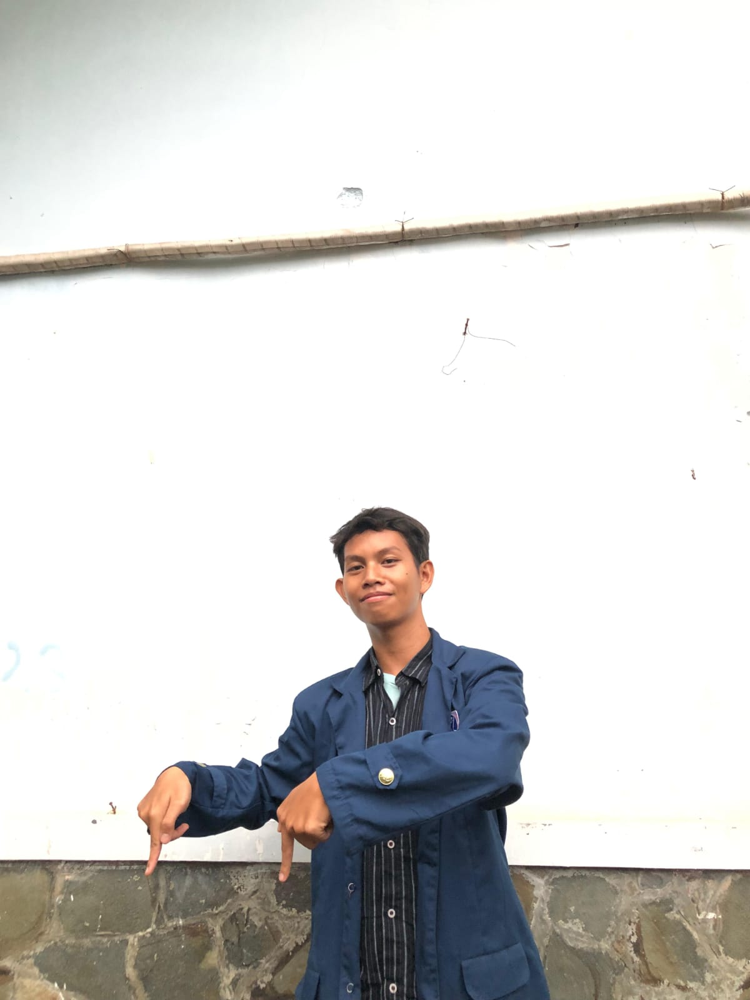
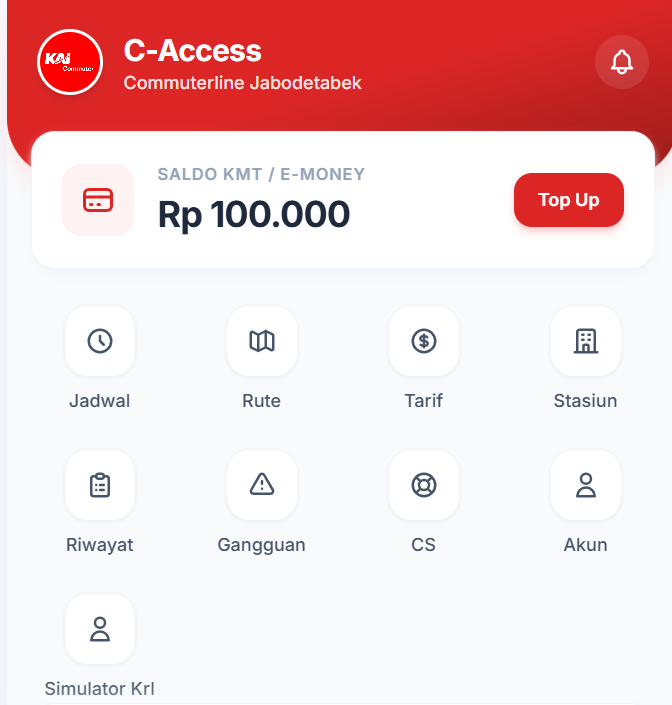
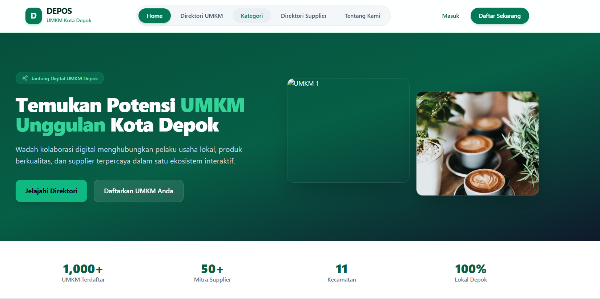

Web app
Website e-commerce UMKM laundry
Pemesanan laundry online dengan kalkulator berat, manajemen transaksi, dan database MySQL.
HTML, CSS, JS, MySQL
Terbuka untuk proyek & magang
Mahasiswa Teknik Informatika di STT Terpadu Nurul Fikri, alumni TKJ SMK YPPD. Saya mengerjakan antarmuka, REST API, dan database, dari desain di Figma sampai aplikasi yang berjalan.

Nama lengkap saya Misbahul Anam Sidiq, biasa dipanggil Misbah. Di SMK YPPD jurusan TKJ saya belajar jaringan, routing, dan arsitektur server. Sekarang di Teknik Informatika saya fokus pada aplikasi web, RESTful API, dan sistem basis data.
SMK YPPD
Teknik Komputer & Jaringan (TKJ), lulus
STT Terpadu Nurul Fikri
S1 Teknik Informatika, sedang berjalan
Konfigurasi MikroTik RouterOS, topologi, subnetting, IP addressing, dan server Linux.
Node.js, Express, REST API, MySQL, serta HTML, CSS, JavaScript, dan Tailwind untuk tampilannya.
Prototipe dan visual di Figma, plus edit foto dengan Photoshop dan Lightroom.
Lima karya yang paling mewakili cara saya bekerja.
Pemesanan laundry online dengan kalkulator berat, manajemen transaksi, dan database MySQL.
HTML, CSS, JS, MySQL

Memantau dan memverifikasi pencairan serta pencatatan keuangan KIP Kuliah.
Node.js, Express, React, MySQL

Antarmuka KRL Jabodetabek yang modern: saldo KMT, jadwal, rute, dan stasiun.
HTML, Tailwind, JS, Figma

Dashboard e-learning responsif: mata kuliah aktif, status tugas per semester, dan kuis.
HTML, Tailwind, JS

Point of Sale untuk pelaku UMKM Depok: transaksi, produk, dan penjualan dalam satu tempat.
Point of Sale
Saya terbuka untuk diskusi pengembangan web, database, infrastruktur jaringan, dan kolaborasi lainnya.